PoPo
An online multiplayer arena game where chickens throw eggs at each other, built around one barnyard map I designed.
- Role
- Level design, development
- Engine
- Unity 6, C#, Photon Fusion 2
- Course
- CS 355, Pace University
- Status
- In progress: all game rules working (graybox)
The game
Friends join the same online room with a code and fight across one map, the Barnyard. I'm building PoPo as my final project for CS 355, and the map is the main focus: I want it to show how I think as a level designer. This page follows the project as it grows, starting with the graybox.
The map: three lanes and one prize
The Barnyard has three lanes. The barn is for close-range fights, with a hayloft for height. The open yard in the middle has scattered cover. The cornfield is a slow, hidden flank route. All three lanes meet at the mud pond, where the Golden Egg power-up sits on a small island: a big reward, but the mud slows you down and the silo can see you.
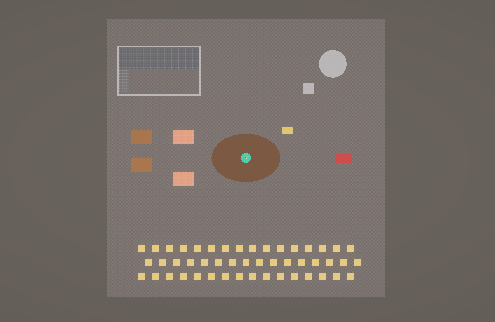
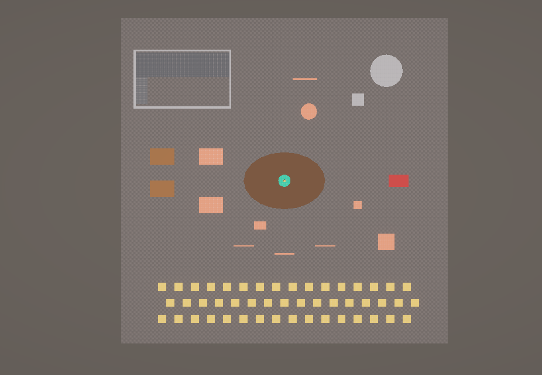
How I tested the graybox
I blocked out the whole map with simple shapes before making any art, so changes stay cheap. Then I saved four camera spots where a player would stand: the barn door, the top of the silo, inside the cornfield and behind the tractor. I took screenshots from each one, reviewed them, made changes, and took the same shots again.
Problem I solved: the silo saw everything
From the top of the silo I could see the whole yard, the Golden Egg and every route to it. Whoever held the silo would control the middle of the map. I added an 8 meter water tank between the silo and the barn side, so there is now a safe route to the pond. The egg is still visible from the silo, so grabbing it stays risky.
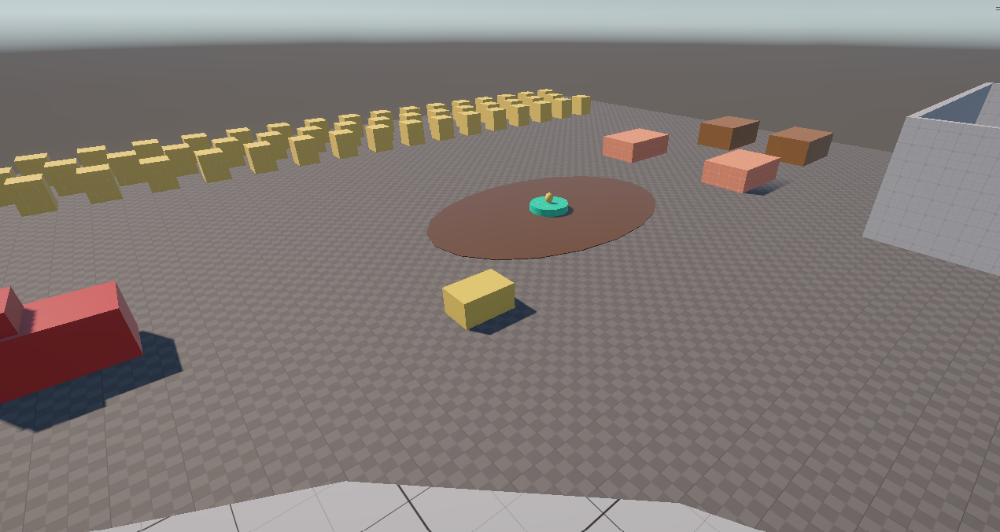

Problem I solved: long runs with no cover
The top-down view showed big empty areas, and the right side of the map had almost nothing to hide behind. I added fences and a trough between the cornfield and the pond, crates and a shed on the right side, and moved a hay bale to the side of the pond the silo can't protect against. Now every route has a place to stop and take cover.
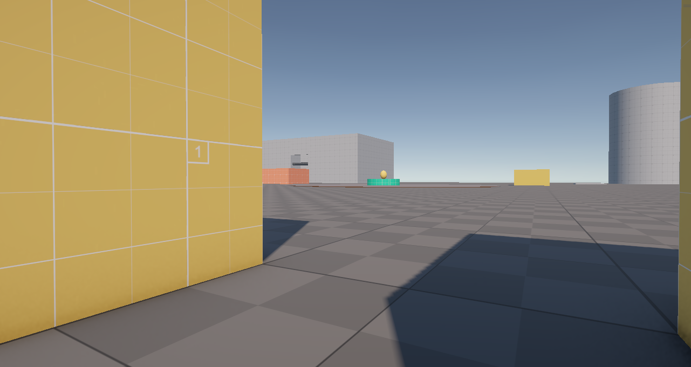
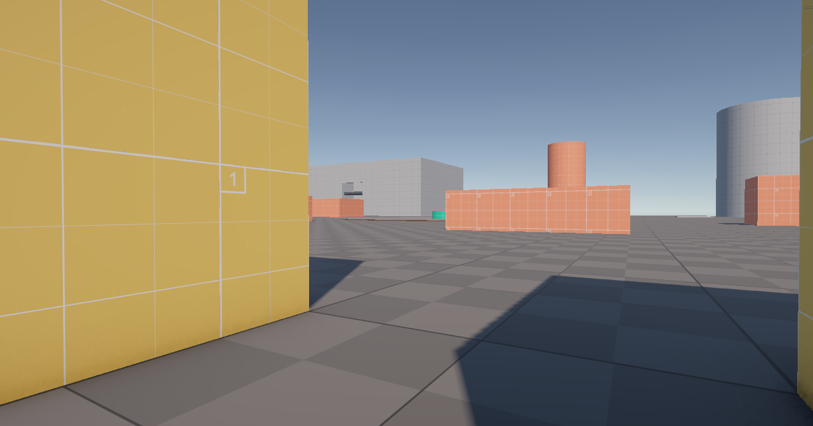
Making cover easy to read
I gave all cover the same orange color, so players (and playtesters) can tell at a glance where they can hide. Landmarks like the red tractor and brown coops keep their own colors, so players can call them out: "meet me at the tractor."
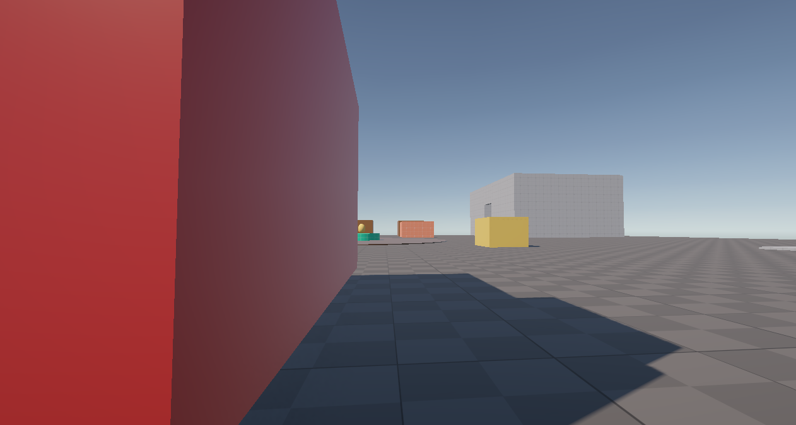
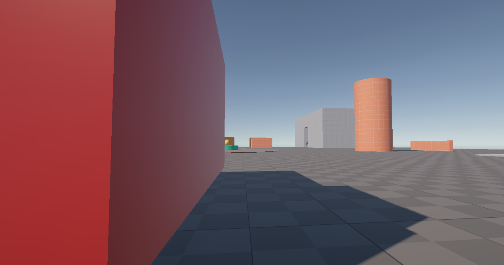
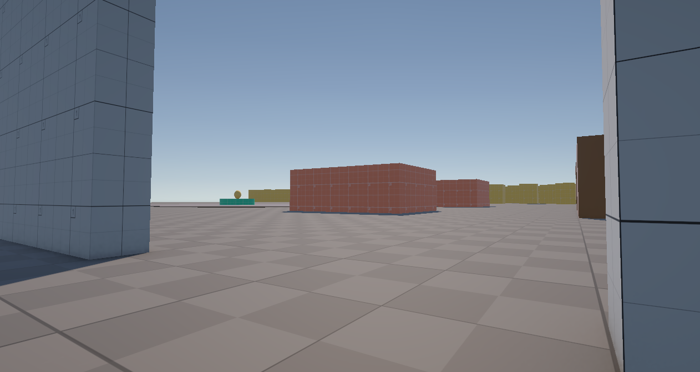
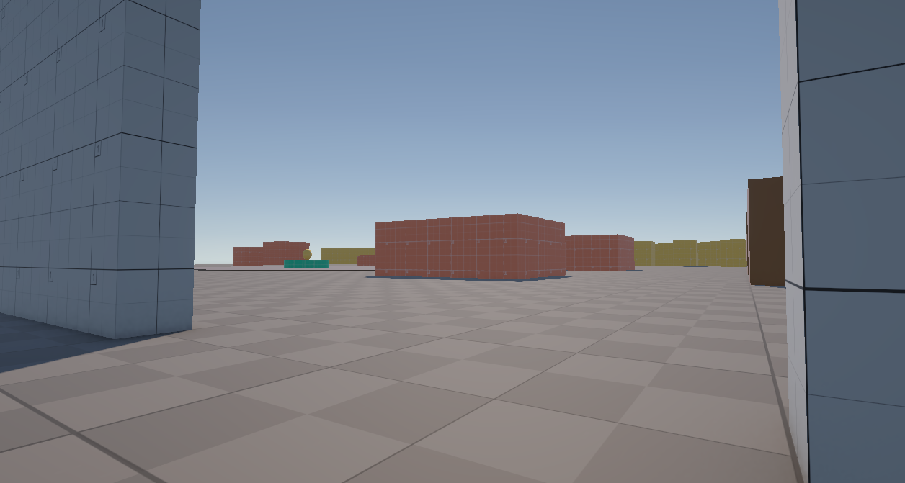
Building the chicken from simple shapes
I can't draw or animate yet, so I built the player chicken the same way I grayboxed the map: out of spheres and cubes. The red comb and orange beak make the front easy to read from far away, so players can tell which way another chicken is facing. The egg players throw is a stretched sphere in a warm off-white, so it stands out against the gray ground. Because the gameplay parts (collider, camera, launcher) are separate from the shapes, I can swap in a final model later without changing how the game plays.
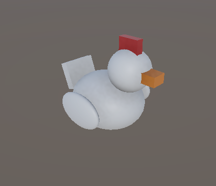
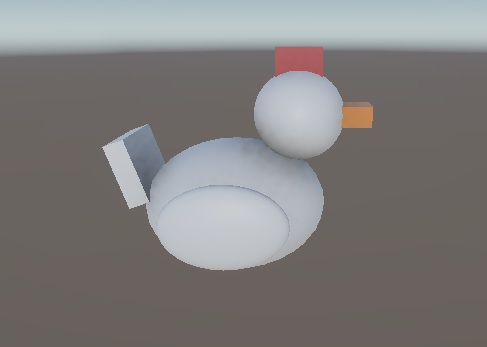
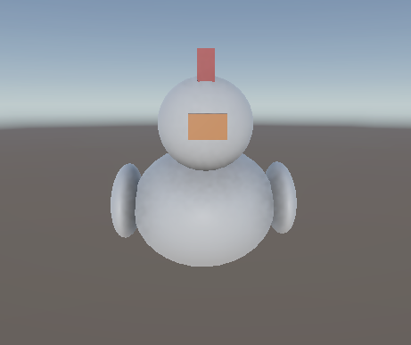
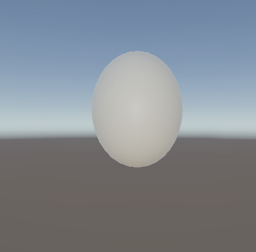
Playable: the chicken on the map
The chicken runs with WASD, turns with the mouse, jumps, and can glide by holding Space in the air. A third-person camera follows it. I tuned the speed so crossing the map takes about 20 seconds: fast enough to get back into the fight after a respawn, slow enough that the map doesn't feel small.
Problem I solved: the chicken spun when it hit walls
Running into a wall at an angle made the chicken twist around, so it felt like the walls were grabbing it. Collisions were adding spin, and friction made the chicken stick to the wall. Now only the mouse can turn the chicken, and its collider has no friction, so it slides along walls instead.
Problem I solved: eggs flew through cover
In the class project I started from, shots only checked for players and passed straight through everything else. That would have made all the cover in my map useless. Now an egg breaks on the first wall, hay bale or patch of ground it touches. Eggs also fly in an arc, so they reach about 25 meters on flat ground: the silo still gets extra range from its height, but it can't control the whole map.
First online playtest
I built the game and ran it on two laptops connected online. I couldn't get other players for this first round, so I controlled both chickens myself: one to play, one as a target. Movement, feather colors and honks all synced well between the laptops. These are the problems I found and how I fixed them:
| What I found | What I changed |
|---|---|
| Eggs flew over the other chicken at medium range | Flatter throw with lighter gravity, aiming up and down with the mouse, and a "+" crosshair |
| Aiming up pushed my chicken off the bottom of the screen | A camera that circles the chicken: aiming up moves it down, so the chicken stays in view. It also moves closer when a wall is behind it. |
| A knocked-out chicken could respawn right in front of the other player | Players now respawn at the spawn point farthest from everyone else |
| Nobody could reach the silo | A working jump pad that launches the chicken high enough to land on top |
| The chicken could fall into the silo and get stuck under its edge | Swapped the silo's and water tank's rounded colliders for ones that match their real shape |
| After the jump pad, the chicken fell through the ground | See below |
One thing I kept on purpose: long throws still curve a little. These are chickens throwing eggs, not soldiers aiming rifles, so a bit of wobble is part of the fun.
Problem I solved: falling through the map
After the jump pad, the chicken came down so fast that it passed through the thin ground between two physics steps and ended up under the map, with nothing to bring it back. I gave the ground a thick collider, made the chicken check for collisions between physics steps, capped how fast it can fall, and added a kill zone: any chicken that falls below the map respawns automatically.
Turning it into a match: name tags, score and rounds
Until now, PoPo was chickens throwing eggs forever. To make it a real match, I added name tags, a score for every player and 5-minute rounds with a winner.
Name tags
Every chicken shows its player's name, always turned toward the camera so it reads from any angle. While testing, I turned on my own tag and saw it sat right on top of my crosshair, so players only see other players' names, not their own.
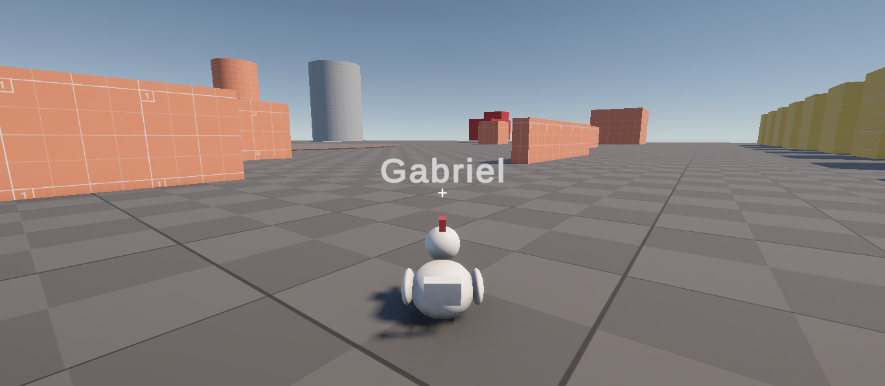
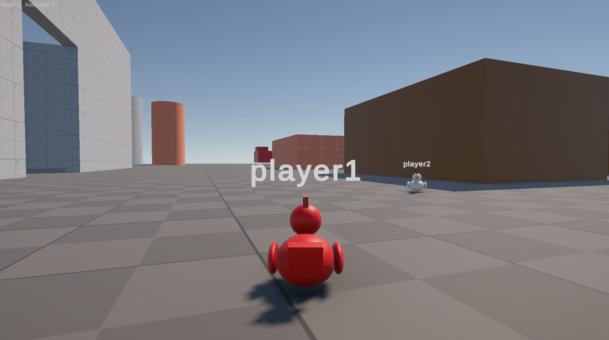
Score and rounds
Every egg remembers who threw it, and the thrower gets a knockout when it lands the last hit. One player's game acts as the referee and runs a 5-minute clock that every player sees; if that player leaves, another one takes over. Holding Tab shows the scoreboard, and when time runs out everyone sees the winner for 10 seconds before a new round starts.
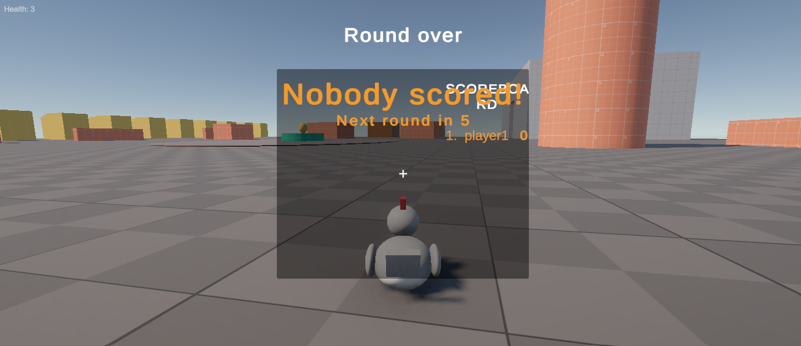
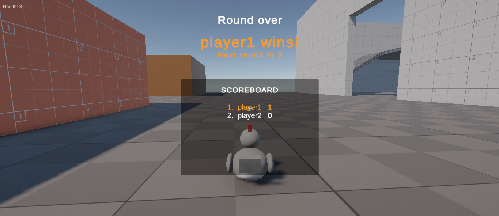
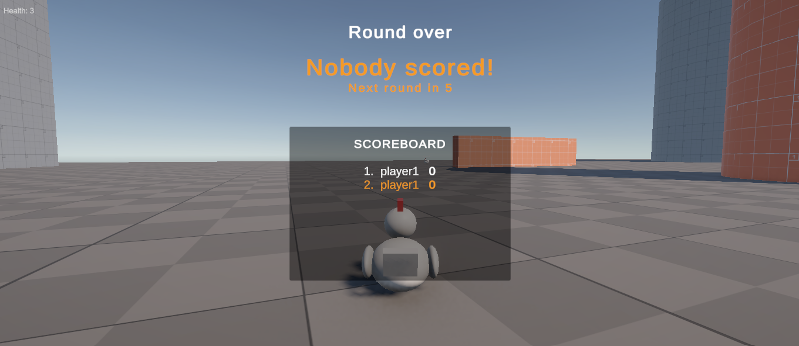
Second playtest: what I found and changed
| What I found | What I changed |
|---|---|
| Respawning deleted the chicken and made a new one, which would wipe its score | Respawning now teleports the same chicken, so it keeps its score, name and color |
| With many eggs in the air, a chicken could respawn with only 2 health | 1.5 seconds of spawn protection, so late eggs can't hurt a chicken that just respawned |
| A player who joined late didn't see another chicken's color | Every chicken applies its current color as soon as it appears on someone's screen |
| At the start of a new round, every chicken appeared on the same spawn point | Each player gets their own spawn point at the start of a round |
| The crosshair sat on top of the scoreboard on the winner screen | The crosshair is hidden while the winner screen is up |
Playing with a friend
My first playtest with another person was a full round online on two laptops (the video at the top of this page). My friend said it was fun: he got excited when I took the lead and had to catch up, and the round ended in a tie. In the video we used every part of the map, but with only two players we went long stretches without seeing each other. The Golden Egg is meant to fix that by pulling everyone to the middle.
The Golden Egg and the mud pond
The Golden Egg floats on a small island in the middle of the mud pond. Whoever grabs it throws gold eggs that do double damage for 10 seconds, and their name turns gold so everyone knows who to run from. It comes back 30 seconds later. The catch is the mud: it cuts your speed in half, so going for the egg means slowing down in the open, where the silo can see you.
In the clip below, my friend's chicken jumps onto the island, grabs the egg, and knocks out my chicken while I'm still slowed down in the mud. That's the risk and reward I designed the middle of the map around.
One thing I noticed: only the name tag showed who had the power, so from far away or from behind you couldn't tell. So now the whole chicken glows and pulses gold while it's powered up, and gold eggs leave a gold splat (you can see it in the hen video below).
From shapes to an animated hen
The shape chicken was great for testing, but it didn't move. For the real character I picked a cartoon hen from the Unity Asset Store (Meshtint's Farm Hen) instead of a realistic one: PoPo is a silly party shooter, and a round, cute hen is easier to read when it's small on the screen. Because I had kept the gameplay parts (collider, camera, launcher) separate from the shapes, swapping the model only meant replacing one child object. Movement, shooting and networking didn't change.
The hen has six animations: idle, run, jump, beak attack, take damage and spawn. Instead of drawing a web of transitions in the Animator, a small script picks the right one from what the chicken is doing: its speed, whether it's in the air, whether it just threw an egg, and whether its health went down. The pack has no glide animation, so while gliding the script replays the jump flap in a loop. The run animation also speeds up with the chicken, so the feet don't slide on the ground.
| What went wrong | What I changed |
|---|---|
| The Animator kept cycling through every animation | The pack's demo controller plays all animations in a loop, so I made my own controller with one state per animation |
| Run and idle flickered when the chicken slowed down | Smoothed the speed and used two limits: start running above one speed, stop below a lower one |
| The collider sat above the hen, so it floated and clipped into walls | Lined the model up with the collider, so the feet touch the ground and walls stop the body |
| After lining it up, jumping and animations stopped working | The ground check started exactly at the feet, inside the floor, so it never saw the ground. It now starts a little higher |
Problem I solved: a camera that never loses the chicken
A shooter's camera has two jobs that fight each other: let the player aim anywhere, and always show the player's own character. My first camera circled around the chicken. When you aimed up, it dropped down behind the chicken, hit the floor, and pushed itself right into the chicken, so all you saw was the tip of its comb.
I looked at how third-person shooters solve this and switched to an over-the-shoulder camera, built with Unity's Cinemachine. The chicken sits a little to the left, so it never covers the crosshair, and the camera slides closer when a wall gets in the way. Since the chicken is no longer in the middle of the screen, eggs now fly from the beak toward whatever is under the crosshair.
Getting there took a few tries:
| What went wrong | What I changed |
|---|---|
| Keeping the camera high while aiming up still pushed the small chicken off the bottom of the screen | Dropped that idea: the camera has to circle around a point on the chicken, so the chicken can't leave the frame |
| The new camera looked like first person | It was dodging my own chicken as if it were a wall. My chicken has a different tag than other players, so I told the camera to ignore that tag |
| The chicken shook on screen while running | The camera was smoothing its movement while the chicken moves in physics steps. I turned off the smoothing and made the camera update once per frame |
| Couldn't aim high enough to hit players on the silo | Raised the aiming limit from 14 to 34 degrees up |
From graybox to barnyard: the art pass
With the gameplay tested, I replaced the gray blocks with farm art. My rule was to keep the graybox: every block I playtested stays in the level as an invisible collider, and the art sits on top of it. That way the cover, sightlines and jumps players already learned don't change, only the look does. The props come from free Unity Asset Store packs (a low poly farm pack, a vehicle pack and a crops pack), placed and scaled to fit my blocks.
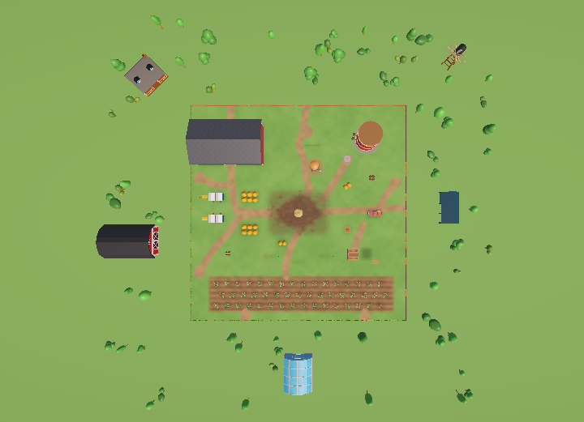
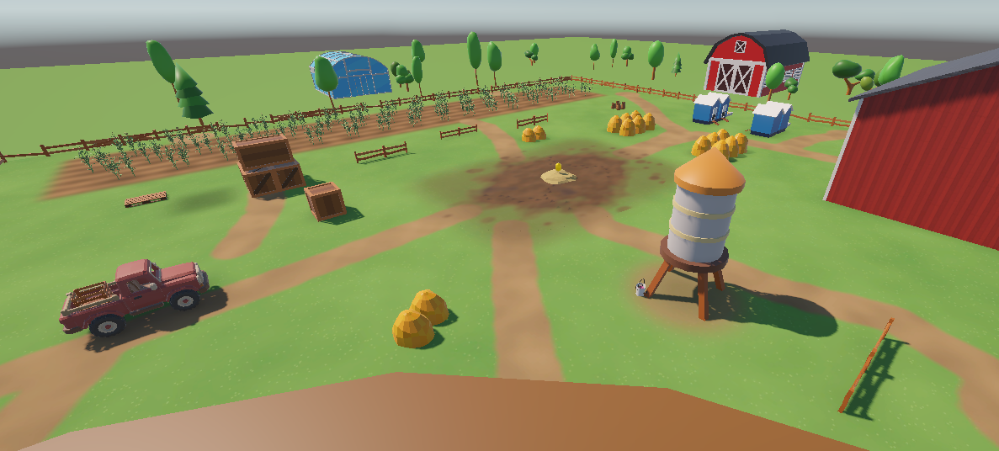
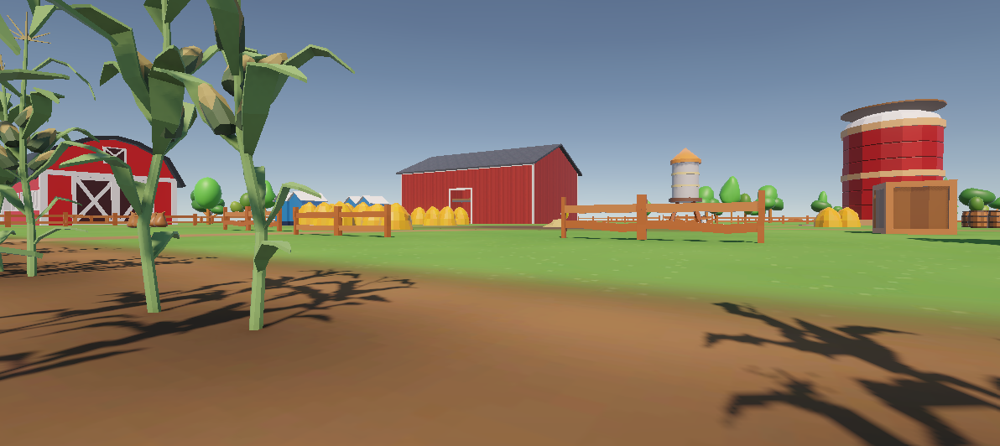
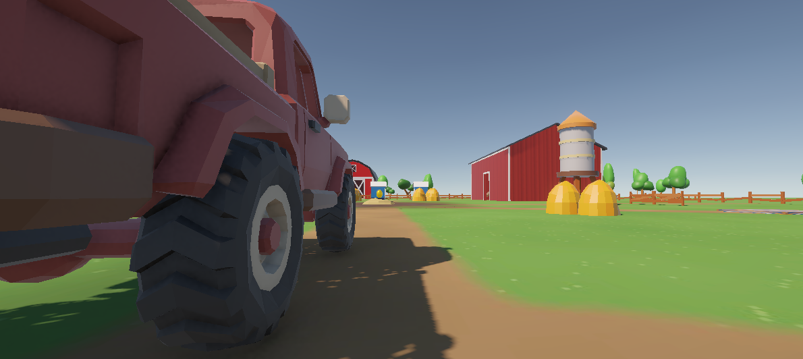
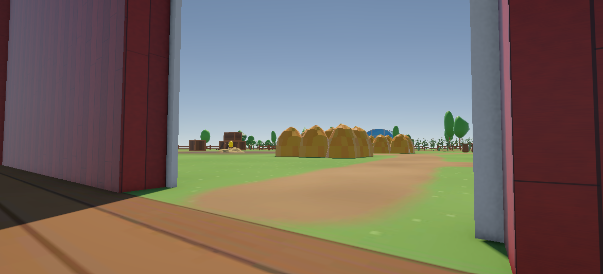
Art decisions that changed the gameplay
Some art didn't fit my blocks, and each time I had to decide whether to change the art or the gameplay.
| What I found | What I decided |
|---|---|
| The store barns are closed boxes with painted doors and no inside, but my barn is a playable space with a hayloft and a ramp | Kept my own barn walls and gave them a new look: red planks, white trim and a roof |
| Without a roof, players on the silo could shoot straight into the barn, but my design doc says the barn is a close-range brawl | Added a roof, kept below the silo deck. The barn is now a protected indoor fight |
| The chicken coop model has a ramp, and chickens ran up it onto the roof: a new high spot near the spawns | Blocked the ramp, so high ground stays limited to the silo and the hayloft |
| The water tower stands on legs, but its collider filled the gap under the tank, so players hit an invisible wall | Changed the collider to follow the real shape. Players can now run under the tower: a new path |
| The store silo has a dome on top, but players land on a flat silo top from the jump pad | Added a wooden lookout deck at the same 12 m height, so the jump pad works exactly as before |
| Chickens could run or glide off the edge of the map, and two spawns were close to it | Added a fence and an invisible wall around the whole map |
| The run from the pond to the jump pad and two other stretches had too little cover | Added three new pieces of cover: a hay pile on the jump pad route, barrels near the truck, and feed sacks in the southwest |
The Golden Egg, now easy to spot
The Golden Egg is the prize of the map, so it has to stand out from far away. I put it on a straw nest in the middle of the mud and made the egg shiny, glowing gold, while the straw and the mud stay dull. The jump pad got bright colors for the same reason: things players use should never look like decoration.
What I did so far
- Wrote the design doc and drew the map layout: three lanes, six spawn points, one power-up
- Built the full graybox in Unity: barn with hayloft and ramp, silo, mud pond, cornfield and cover
- Reviewed it from four player viewpoints and from above, then fixed sightlines and cover gaps
- Started from my class multiplayer project (Photon Fusion), so players can already join a room together
- Built a placeholder chicken and egg from simple shapes, with colors that make the front and the projectile easy to read
- Replaced the class tank controls with chicken movement: run, turn, jump and glide, with a third-person camera
- Made eggs arc and break on cover, so the map's cover actually protects players
- Ran the first online playtest on two laptops and fixed aiming, the camera, spawns, silo access and falling through the map
- Set up version control with Git and GitHub, and moved the game to its own Photon account so it doesn't depend on the class one
- Added name tags, a score for every player, 5-minute rounds, a scoreboard and a winner screen built with Unity's UI and TextMeshPro
- Ran a second playtest and fixed respawning, spawn protection, color sync for late joiners and round-start spawns
- Played a full online round with a friend on two laptops (the video at the top of this page)
- Added the Golden Egg power-up and the mud pond, completing all the game rules from my design doc
- Made powered-up chickens glow gold, and added egg splats when eggs break
- Replaced the shape chicken with an animated cartoon hen, driven by a script that picks the animation from what the chicken is doing
- Rebuilt the camera as an over-the-shoulder camera with Cinemachine, with eggs flying to the crosshair
- Finished the art pass: farm props on top of the tested graybox, a barn with a roof, a fence around the map, and three new pieces of cover
What's next
- Playtests with other players: where fights happen, whether people use the cornfield, and whether the silo is too strong
- Playtest the finished map with friends, especially the silo against the jump pad route
- Lighting and atmosphere: sun angle, sky color and a little fog in the distance
- Sound and a main menu
What I learned so far
A screenshot from the right spot shows problems faster than walking around the map. Looking from the silo made it obvious that one position was too strong, before any player ever had to suffer through it.
The camera taught me to look at how other games solve a problem before fixing it my own way. My own fixes kept patching the symptom, while the shoulder camera that shooters use solved the whole problem at once.